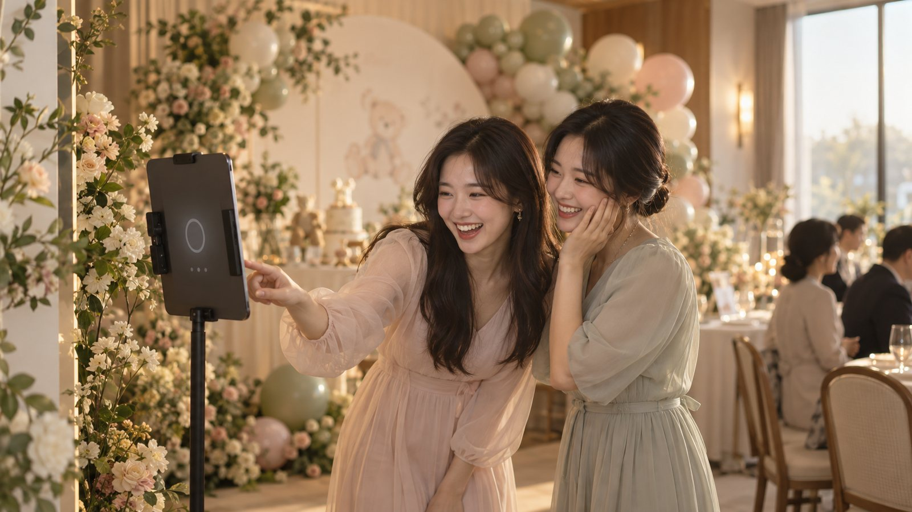

FRAEMIIBOOTH · 부스형
돌잔치 · 웨딩 업체 제휴 상품
태블릿 한 대로
상품 하나가 늘어납니다
FRAEMII는 폰으로 네컷 사진을 찍는 앱입니다. 부스형은 그 앱을 행사장에 세워 두는 상품이에요. 포토존에 태블릿을 놓는 것이 전부입니다. 손님이 직접 찍고 QR로 그 자리에서 받아 가고, 행사가 끝나면 그날의 모든 사진이 호스트에게 전달됩니다. 설치도, 상주 인력도, 재고도 없이 고객사에 내놓을 상품 하나가 생깁니다.
행사장 포토존

